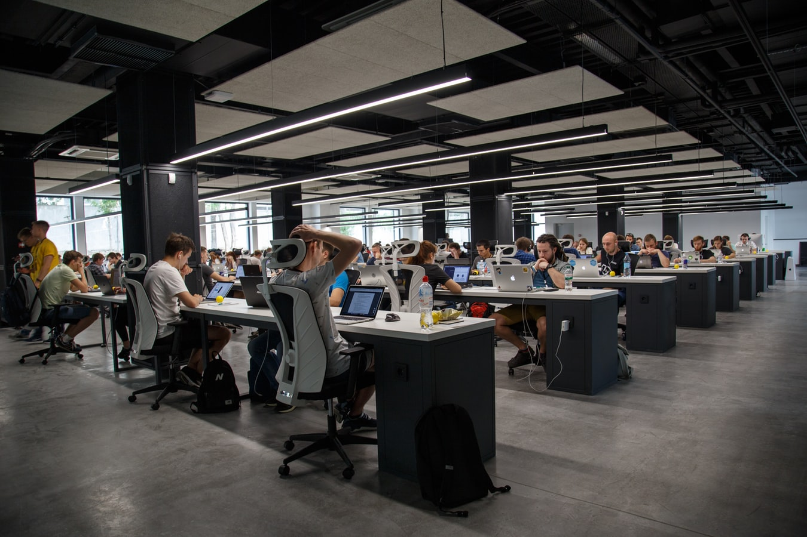

Intro
I’m Alun, an accomplished Software Engineer with a history of developing innovative, high-quality
web-based software applications and Web API's. Recently achieved industry recognised cyber security
and Microsoft certifications while taking a keen interest in developing secure web applications and
Web API's utilising secure coding practices and OWASP Top 10 methodologies.
My strong commercial acumen and added value focus have been key to my success. I’m completely
conversant in Java, C#.NET, JavaScript, Visual Studio, Windows and Linux. Collaborative and team
oriented, I operate successfully in a collaborative, fast-paced Agile, continuous integration
environments, capably handling challenges, change, complexity and pressure.
I spent 12 years with Basware, joining as Senior Integration Consultant, with promotion to Lead
Integration Consultant in 2016, working on A+ customer base Purchase-to-Pay (P2P) and Invoice
Automation (IA) global enterprise projects, around the globe either remotely or on site. I was
responsible at critical level for designing, developing and implementing best in class software
solutions and services. Notably I was technical lead of a team of 6 and owner of global architecture
design and functionality design for a new system implementation for a technology company.
My technical expertise is broad, including experience of software development, database knowledge
and testing expertise. My proficiency in test driven development (TDD) and behaviour driven
development (BDD) processes is excellent. Highly driven, I welcome technically challenging, business
critical projects. I’m accustomed to operating in cross-sector blue chip environments and driven to
exceed customer expectation. Well-qualified, I have a degree in Computing plus industry
certifications. I rapidly assimilate rapidly to new environments and teams.
Work

AUTO TRADER UK (May 2021 –Present)
I work as a Software Engineer for the Stock and Search Platform team, our mission is to provide a technical platform for more than just the needs of AutoTrader.co.uk.
We are expanding our reach; with work on our public facing web services and ingestion of additional external data sources to power all businesses in the automotive space.
We take quality very seriously, ensuring service availability and responsiveness continue to improve. We work on systems that have thousands of requests per second,
sub 100 millisecond response times, and 50+ distinct client systems. We use Java, Maven, Spring Boot, Apache SOLR, Cloud SQL and Apache Kafka to power our platform
and process millions of events per day.
For 2021\2022, we will:
-
Provide APIs to clients on what additional optional features were fitted onto a vehicle as it leaves the factory.
-
Collaborate with new data providers, such as the DVLA, the police, insurers and finance providers, to build an even more accurate picture of all of the UK’s vehicles.
-
Migrate one of our oldest and most significant applications to the cloud.
-
Provide easy to use tools for teams to navigate and manipulate our datasets effectively and safely without having to resort to an SQL query.
This will involve creating new data products in our new analytics platform for both internal and external clients to use.
TECH RETURNERS (Jan 2021 – Mar 2021)
Following a break from engineering joined Your Return To Tech programme to further upskill in new
and existing technologies playing a key role in a fully agile scrum based project to design, develop
and deliver a web application to advise on the best time and way to maximise sunshine on your daily
walk. Full involvement in every aspect of the project life cycle including creating a Minimum Viable
Product (MVP), sprint planning, daily scrum, sprint reviews, sprint retrospective, frontend and
backend software development, right through to a final presentation of the product to key businesses
in Manchester. Key focus areas included the design, development and deployment of the backend C#
.NET Core Web APIs to AWS Lambda which integrate the frontend React project to the backend MySQL database
making use of the Axios framework to make the HTTP requests to the backend API’s. Other focus areas
included google maps API integration on the front end using the Geolocation API for identifying the
user’s location and utilising the Google JavaScript maps API to give users the ability to draw
custom routes on the map and save the route data to the database for later retrieval.
CAREER BREAK (Feb 2020 – Jan 2021)
Opportunity to upskill in cyber security and cloud technologies, obtaining certifications for
Microsoft Azure and industry recognised cyber security certifications for CompTIA Security+, CompTIA
Network+ and EC Council Certified Ethical Hacker (CEH) scoring an exam result of 99.2 percent
gaining a position in the top 10 worldwide.
BASWARE (Sep 2007 – Feb 2020)
Joined as Senior Integration Consultant, with promotion to Lead Integration Consultant in 2016,
working on A+ customer base Purchase-to-Pay (P2P) and Invoice Automation (IA) global enterprise
projects, around the globe either remotely or on site. Specialist in SAP FI and SAP MM integration
development solutions, whilst also working in other areas. Responsible at critical level for meeting
client requirements by designing, developing and implementing best in class software solutions and
services. The role operates as a member of a virtual team alongside globally dispersed colleagues.
Scope includes requirements elicitation, scoping, costing, presenting technical concepts to
customers, resource planning, data integration, documentation development, risks/issues management,
testing, change management and quality assurance. Role requires use of Waterfall and Agile project
methodologies and operates in collaboration with sales teams, solutions architects, plus other
members of a complex, global stakeholder network.
-
Key member of a large internal project contributing to the design and development of open API’s developed using ASP.NET Web API in C#, allowing customers to extract data from Basware systems hosted on AWS and vice versa allowing customers to push payment data from their own financial systems such as SAP or ORACLE to Basware systems hosted in the cloud.
-
Responsible for the design and development of Basware middleware solutions using C# and in-house technologies allowing connectivity of Basware P2P and IA products to third party enterprise systems through integration methods such as web services (SOAP and Rest), API’s, direct database connection, XML files and more.
-
Responsible for writing complex queries against MS SQL Server and Oracle databases for identifying product issues, optimising system performance, and reports for analytics purposes.
-
A strong passion for writing clean code that is easy to understand, easy to support and easy to extend adopting SOLID principles when needed.
-
Technical lead of a team of 6 and owner of global architecture design and functionality design for a new system implementation for a technology company; the first to use new PO Sync (Basware purchase order interface which synchronises purchases orders from any customer ERP system to Basware Alusta P2P/e-invoicing cloud-based solution).
-
Optimising existing PO Sync template (technical configuration developed in anyERP, Basware’s middle solution) and Matching Client (part of the Alusta solution used for manual order matching) in order to comply with technology sector client’s increasing high volumes of purchase orders daily; designing a new SAP interface, now adopted as the “standard”.
-
Key driving force behind design of a new PO Sync template, addressing problems with legacy configuration, in particular the support for multiple SAP PO types, new SAP functionality and performance issues.
-
Lead consultant of a team of 5 and architect for delivery of CORE system to a pharmaceutical major, hosting 25 different countries on one single instance; also designing, developing and maintaining all SAP interfaces using anyERP.
-
Designing an advanced Alusta Matching solution for a technology sector client involving complex SAP matching scenarios for service orders, whilst keeping within Basware best practice methodologies.
-
Handpicked to join the Global Interface Community, reforming global community groups; recognised by a senior stakeholder as a top contributor, particularly in relation to SAP interface issues.
-
Designing and developing interfaces for global customers with +30 country units consisting of multiple different ERP systems; ensuring the interface architecture allows for scalability and effortless support.
-
Reducing development timescales and optimising efficiency by creating global interface templates and best practice documents for Basware consultants and partners, e.g., integrating web services and configuration change management.
-
Main point of contact globally for SAP FI and SAP MM solutions; actively contributing to the Basware online global community forums providing technical assistance, knowledge and experience to Basware consultants and partners.
-
Leveraging business efficiency and effectiveness as member of the Basware "Tiger Team" appointed to projects that require specialist help to reshape and fine tune process models and integrations.
-
Generating additional revenue for the business as key contributor to pre-sales activities and by identifying opportunities to sell new change requests, either for work outside of scope of the project or when certain processes require redefinition.
DIGITAL VISION (Sep 2005 – Feb 2007)
A fast-paced client facing role, providing technical consultancy to senior stakeholders, enabling maximisation of opportunities and
mitigation of threats. Key impetus behind delivery of various high-profile projects, primarily in the areas of document management
integrations, bespoke software solutions development/testing and Contempus project implementations.
-
Enabled transfer of bank accounts (including Standing Orders, Direct Debits and Bill Payments) from a donor bank, such as Barclays,
by developing Alliance and Leicester's account switching system.
-
Developed multiple customer and in-house software solutions, in a range of programming language,
including Java, Java Script, VB 6, VB Script, VB.NET, C#.NET, PL\SQL.
LLOYDS BANK(2003 – 2005)
Joined as a Systems Developer to develop the banks Telephony software.
Technical Skills
My technical skills include:
- Programming:
C#, .NET, Java, JavaScript, React, Node.js, HTML, CSS
- Frameworks & Platforms:
Xunit, Junit, Spring Boot, Jest, Maven, Npm, Moq, Mockito, FluentAssertions, Assertj, ESLint, AWS Toolkit, CicleCI, Terraform, Apache Kafka
- Development Environments:
Visual Studio 2019, Visual Studio Code, Intellij, Git, GitHb
- Cloud Environments:
Google, AWS, Azure, AWS Lambda, Serverless
-
RDBMS:
PL/SQL, MySQL, Oracle, MSSQL, SQL
- PM Tools:
Jira, Slack, MS Teams, Zoom, Skype
-
Methodologies & Practices:
Object Oriented Design, Refactoring, Agile, Scrum, Waterfall, Open API, Change Management
-
Web Services & Formats:
SOAP, REST, JSON, XML/XSLT, WSDL, HTML, AXIOS, POSTMAN
-
ERP Integrations:
SAP FI, SAP MM, Oracle, JDE, BAAN, Sage and many others
-
Operating Systems:
Linux, Windows
Transferable Skills

My transferable skills include:
- Software Development & Programming
- Systems Software Architecture
- SAP Interface Expert
- Design & Delivery
- Technical Documentation
- Requirements Analysis
- Risk & Issues Management
- Staff Development
- Efficiencies & Cost Savings
- International Experience
- Software Testing
- Business Partnering
- Application Security
- Technical to Business Interface
- Teamwork & Collaboration
- Communicating & Presenting
- Meeting Deadlines
- Quality Focus
- Attention to Detail
- Network Security
- Enterprise Systems
- Solutions Oriented
- Website Security
- Creating Value Through Technology
- Explaining Technical Concepts
- OWASP
- Paired Programming
Professional Development
- EC Council: Certified Ethical Hacker Master
- EC Council: Certified Ethical Hacker Practical
- EC Council: Certified Ethical Hacker (CEH)
- Microsoft Certified: Developing Solutions for Microsoft Azure (AZ-204)
- Microsoft Certified: Azure Fundamentals (AZ-900)
- CompTIA: Security+ Certified
- CompTIA: Network+ Certified
- Information Systems Examination Board (ISEB): Software Testing
Project Work